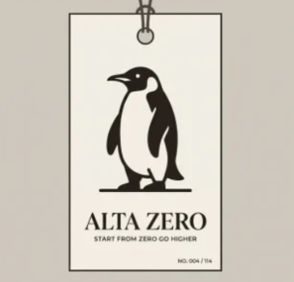
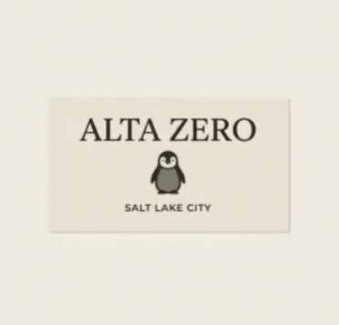
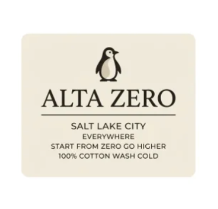

The label is not the afterthought.
It is the front door.
Most brands live on the outside of the shirt. We moved the whole brand to the inside, to a woven neck label and a hangtag you have to hold to read.
Most brands live on the outside of the shirt. We moved the whole brand to the inside, to a woven neck label and a hangtag you have to hold to read. That is not modesty for its own sake. It is a bet. A blank only earns the word premium when the maker had nothing to hide behind, no logo doing the talking, just the cut, the cloth, and the care. So we put the care where you find it in private. The tag is the handshake. Everything else is the garment doing its job.

Read the tag and you get the truth of the piece. Where it sits in the archive. What it is made of. How to keep it alive. One line of why we made it at all. Nobody on the street needs that information. You do. That is the point of a house of blanks. The label is not the afterthought at the back of the neck, it is the front door.

What the tag tells you
- 01Where it sits in the archive. No. 001 to 114.
- 02What it is made of. The fiber and the weight.
- 03How to keep it alive. The care, in plain words.
- 04One line of why we made it at all.

A blank has nowhere to hide. No logo doing the work, just the cut, the cloth, and the care at your neck. We think the best thing you can wear is a garment that lets you be the loud part. The mark is on the tag. That was the whole idea.
Enter The Archive